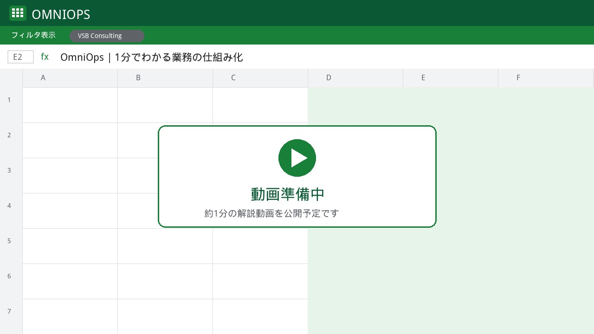

担当が休むと止まる
迷わず順番に入力できる専用画面に統一
01 / VIDEO

1分動画を見る02 / BEFORE → AFTER
迷わず順番に入力できる専用画面に統一
入力は1回だけ。集計・転記はすべて自動化
数式を誤って消せない、閲覧・操作の権限分離
いま使っているスプレッドシートを活かして部分改善
03 / PREVIEW
入力する場所と順番が決まるので、誰が担当しても同じように入力できる
※画面はイメージです（ダミーデータ）
入力した内容がそのまま集計に反映され、転記作業がいらない
※画面はイメージです（ダミーデータ）
04 / STRENGTHS
05 / FLOW
重い表をヒアリング
画面で確認
パネルと保護を実装
使いながら伴走
06 / FAQ
対象業務の範囲や現在のデータ量に応じて、個別にお見積りしています。まずは15分の無料相談で実際のシートを拝見し、作業の範囲と改善の方向を確認したうえで、事前にお見積りをお出しします。後から予期せぬ費用が発生することはありません。
ありません。使い慣れたシートを土台に整えます。
いちばん重い表を伺い、改善の方向を整理して共有します。
NDAを標準締結。構築はダミーデータ、共有ファイルは納品後に消去します。
神奈川・東京・埼玉。オンラインも可。
亀井 宥吏
OmniOps 事業責任者 / BizOpsコンサルタント
15分の画面共有で、どの手作業を減らせそうかを整理した「簡易改善プラン」をその場でお伝えします。強引な営業は一切しません。